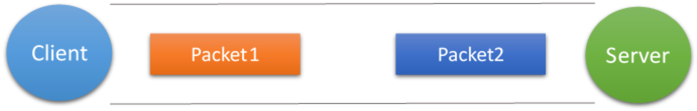
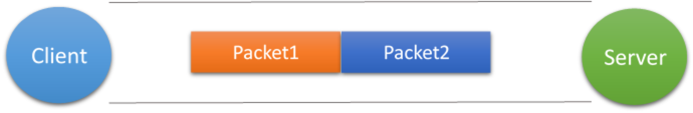
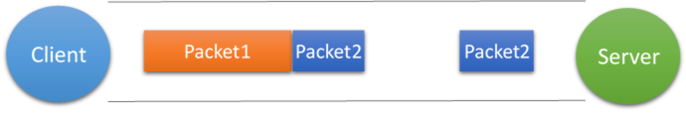

粘包产生的原因
如果客户端连续不断的向服务端发送数据包时，服务端接收的数据会出现两个数据包粘在一起的情况，这就是TCP协议中经常会遇到的粘包以及拆包的问题。
传输层的UDP协议是否会发生粘包或者拆包问题？
不会。UDP是基于报文发送的，在UDP首部采用了16bit来指示UDP数据报文的长度，因此在应用层能很好的将不同的数据报文区分开，从而避免粘包和拆包的问题。
传输层的TCP协议是否会发生粘包或者拆包问题？
会。原因有以下两点：
TCP是基于字节流的，虽然应用层和传输层之间的数据交互是大小不等的数据块，但是TCP把这些数据块仅仅看成一连串无结构的字节流，没有边界；
在TCP的首部没有表示数据长度的字段，基于上面两点，在使用TCP传输数据时，才有粘包或者拆包现象发生的可能。（翻阅TCP协议）
粘包/拆包的表现形式
现在假设客户端向服务端连续发送了两个数据包，用packet1和packet2来表示，那么服务端收到的数据可以分为三种，现列举如下：
第一种情况，接收端正常收到两个数据包，即没有发生拆包和粘包的现象，此种情况不在本文的讨论范围内。

第二种情况，接收端只收到一个数据包，由于TCP是不会出现丢包的，所以这一个数据包中包含了发送端发送的两个数据包的信息，这种现象即为粘包。这种情况由于接收端不知道这两个数据包的界限，所以对于接收端来说很难处理。

第三种情况，这种情况有两种表现形式，如下图。接收端收到了两个数据包，但是这两个数据包要么是不完整的，要么就是多出来一块，这种情况即发生了拆包和粘包。这两种情况如果不加特殊处理，对于接收端同样是不好处理的。

粘包/拆包发生的原因
发生TCP粘包或拆包有很多原因，现列出常见的几点：
1、要发送的数据大于TCP发送缓冲区剩余空间大小[操作系统socket内核缓冲区是tcp协议buffer（滑动窗口）的具体实现]，将会发生拆包。
2、待发送数据大于MSS（最大报文长度），TCP在传输前将进行拆包。
3、要发送的数据小于TCP发送缓冲区的大小，TCP将多次写入缓冲区的数据一次发送出去，将会发生粘包。
4、接收数据端的应用层没有及时读取接收缓冲区中的数据，将发生粘包。
粘包/拆包的解决办法
通过以上分析，我们清楚了粘包或拆包发生的原因，那么如何解决这个问题呢？解决问题的关键在于如何给每个数据包添加边界信息，常用的方法有如下几个：
- 发送端给每个数据包添加包首部，首部中应该至少包含数据包的长度，这样接收端在接收到数据后，通过读取包首部的长度字段，便知道每一个数据包的实际长度了。
- 发送端将每个数据包封装为固定长度（不够的可以通过补0填充），这样接收端每次从接收缓冲区中读取固定长度的数据就自然而然的把每个数据包拆分开来。
- 可以在数据包之间设置边界，如添加特殊符号，这样，接收端通过这个边界就可以将不同的数据包拆分开。
总结
- 贴出来当时测试，包发生粘包的代码，仔细看打的日志
https://paste.ubuntu.com/p/PxCxHhMH5R/
- 注意，一定要注意，协议本身没问题，你也不要考虑协议的什么问题，我觉着主要就是内核缓冲buffer，不一定什么时候发送，一口气发送出去，或者你这个内容太大，给你拆成两个包，结果正好一个包在接收方那端收着了，另一个还没发，这不就是拆包了，或者说，在接收方，迟迟不调接收的buffer，来了一个包的数据进到了buffer，来了一个进来了，应用级别，一读，整个buffer过去了，这不是就是相当于一个包过来的了，就是粘包，没啥好说的，主要就是内核的socket buffer不一定什么时候操作，和内核page cache一个原理。

...
...
This is copyright.